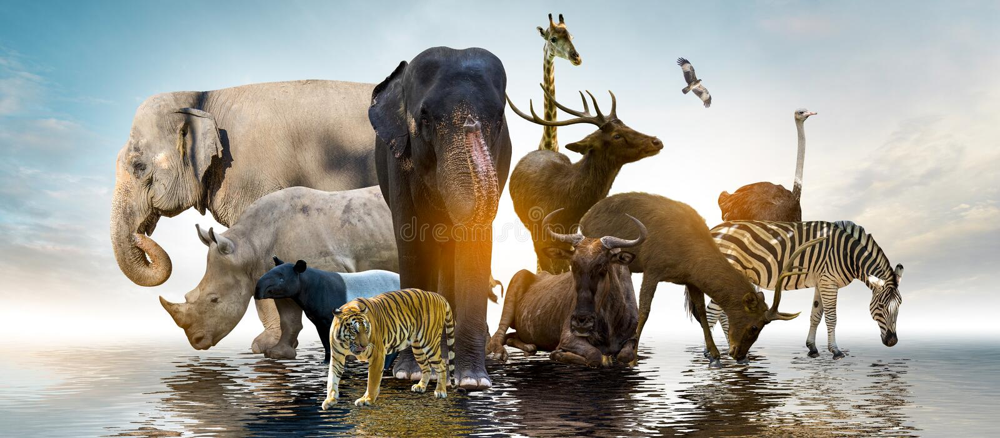

Welcome to the Wildlife Sanctuary
An incredible 25% of the world’s biodiversity is found in Africa, and Kenya is one of the ten most biodiverse countries on Earth.
Kenya is home to 25,000 animal species, including large mammals, 7,000 plant species, and 2,000 fungi and bacteria species. These species thrive in Kenya’s rich ecosystems, from forests and savannahs to the snow-capped peaks of Mount Kenya and arid scrublands.
Kenya also has 467 inland lake and wetland habitats, supporting diverse wildlife. Let’s take a closer look at 20 of the amazing animals you can find in Kenya.